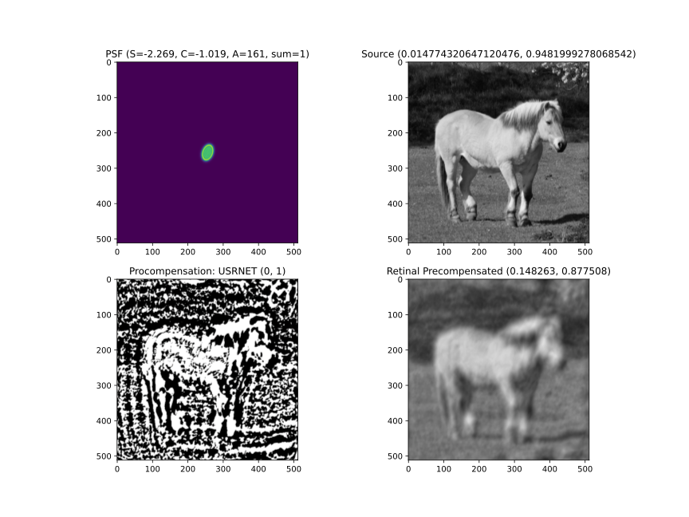

olimp.precompensation.nn.models.usrnet
- class olimp.precompensation.nn.models.usrnet.PrecompensationUSRNet(n_iter: int = 8, h_nc: int = 64, in_nc: int = 4, out_nc: int = 3, nc: list[int] = [64, 128, 256, 512], nb: int = 2, act_mode: Literal['C', 'T', 'B', 'I', 'R', 'r', 'L', 'l', '2', '3', '4', 'U', 'u', 'M', 'A'] = 'R', downsample_mode: Literal['avgpool', 'maxpool', 'strideconv'] = 'strideconv', upsample_mode: Literal['upconv', 'pixelshuffle', 'convtranspose'] = 'convtranspose')[source]
Deep unfolding super-resolution network
